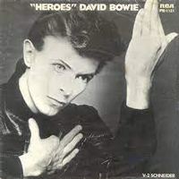
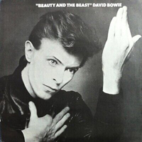
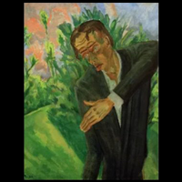
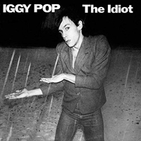

1977 - "HEROES" |
||||
Routinely hailed as one of the best David Bowie album covers of all time, the "Heroes" artwork had already been given a dry run when Bowie had Iggy Pop recreate the pose in German painter Erich Heckel's Roquairol, for the sleeve of his Bowie-produced 1976 album, The Idiot. More striking is Bowie's take, which has become one of the most famous images in pop culture - so much so that Bowie revisited it in 2013 for his long-awaited comeback album, The Next Day. The quotation marks around the album title were intended to "indicate a dimension of irony about the word 'heroes' or about the whole concept of heroism". Photographer: Masayoshi Sukita |
||||
BEAUTY AND THE BEAST Weaving down a byroad Singing the song That's my kind of highroad Gone wrong My-my, smile at least You can't say no to the Beauty and the Beast Something in the night Something in the day Nothing is wrong but darling Something's in the way There's slaughter in the air Protest on the wind Someone else inside me Someone could get skinned, how? My-my, someone fetch a priest You can't say no to the Beauty and the Beast, darling My-my You can't say no to the Beauty and the Beast My-my You can't say no to the Beauty and the Beast I wanted to believe me I wanted to be good I wanted no distractions Like every good boy should, my-my Nothing will corrupt us Nothing will compete Thank God heaven left us Standing on our feet My-my, Beauty and the Beast, my-my Just Beauty and the Beast You can't say no to the Beauty and the Beast, darling My-my, my-my JOE THE LION Joe the lion went to the bar A couple of drinks on the house an' he said "Tell you who you are if you nail me to my car" Boy, thanks for hesitating This is the kiss off Boy, thanks for hesitating You'll never know the real story Just a couple of dreams You get up and sleep You can buy God It's Monday Slither down the greasy pipe So far so good no one saw you Hobble over any freeway You will be like your dreams tonight You get up and sleep You get up and sleep Joe the lion Made of iron Joe the lion went to the bar A couple of drinks on the house an' he was a fortune teller He said, "Nail me to my car and I'll tell you who you are." Joe the lion, yeah, yeah Went to the bar, yeah, yeah A couple of dreams and he was a fortune teller He said, "Nail me to my car, tell you who you are." You get up and sleep The wind blows on your cheek The day laughs in your face I guess you'll buy a gun You'll buy it secondhand And you'll get up and sleep Joe the lion Made of iron Joe the lion, made of iron Joe the lion Made of iron Joe the lion Made of iron "HEROES" I, I will be king And you, you will be queen Though nothing will drive them away We can beat them just for one day We can be heroes just for one day And you, you can be mean And I, I'll drink all the time 'Cause we're lovers, and that is a fact Yes, we're lovers, and that is that Though nothing will keep us together We could steal time just for one day We can be heroes forever and ever What d'you say? I, I wish you could swim Like the dolphins, like dolphins can swim Though nothing, nothing will keep us together We can beat them forever and ever Oh, we can be heroes just for one day I, I will be king And you, you will be queen Though nothing will drive them away We can be heroes, just for one day We can be us just for one day I, I can remember (I remember) Standing by the wall (By the wall) And the guns shot above our heads (Over our heads) And we kissed as though nothing could fall (Nothing could fall) And the shame was on the other side Oh, we can beat them forever and ever Then we could be heroes just for one day We can be heroes We can be heroes We can be heroes just for one day We can be heroes We're nothing, and nothing will help us Maybe we're lying, then you better not stay But we could be safer just for one day Oh-oh-oh-oh, oh-oh-oh-oh, just for one day SONS OF THE SILENT AGE Sons of the silent age Stand on platforms blank looks and notebooks Sit in the back rows of city limits Lay in bed coming and going on easy terms Sons of the silent age Pace their rooms like a cell's dimension Rise for a year or two then make war Search through their one inch thoughts Then decide it couldn't be done Baby, I'll never let you go All I see is all I know Let's take another way down (Sons of sound, and sons of sound) Baby, baby, I'll never let you down I can't stand another sound Let's find another way in (Sons of sound, and sons of sound) Sons of the silent age Listen to tracks by Sam Therapy and King Dice Sons of the silent age They pick up in bars and cry only once Sons of the silent age Make love only once but dream and dream They don't walk, they just glide in and out of life They never die, they just go to sleep one day Baby, I will never let you go All I see is all I know Let's take another way down (Sons of sound, and sons of sound) Baby, baby, baby, I won't ever let you down I can't stand another sound Let's find another way in (Sons of sound, and sons of sound) (Sons of sound, and sons of sound) Baby, baby, baby Find another way BLACKOUT Oh you, you walk on past Your lips cut a smile on your face (Your scalding face) To the cage, to the cage She was a beauty in a cage It's too, too high a price To drink rotting wine from your hands (Your fearful hands) Get me to the doctor's, I've been told Someone's back in town, the chips are down I just cut and blackout I'm under Japanese influence and my honour's at stake The weather's grim, ice on the cages Me, I'm Robin Hood, and I puff on my cigarette Panthers are steaming, stalking, screaming If you don't stay tonight I will take that plane tonight I've nothing to lose, nothing to gain I'll kiss you in the rain, kiss you in the rain (Kiss you in the rain) Kiss you in the rain (Kiss you in the rain) In the rain (In the rain) Get me to the doctor Get me off the streets (Get some protection) Get me on my feet (Get some direction) Hot air gets me into a blackout Oh, get me off the streets Get some protection Oh get me on my feet (wo-ooh!) While the streets block off Getting some skin exposure to the blackout (Get some protection) Get me on my feet (Get some direction, wo-ooh!) Oh get me on my feet Get me off the streets (Get some protection) V-2 SCHNEIDER V-2 Schneider V-2 Schneider SENSE OF DOUBT (Instrumental) MOSS GARDEN (Instrumental) NEUKÖLN (Instrumental) THE SECRET LIFE OF ARABIA The secret life of Arabia Secret secrets, never seen Secret secrets, evergreen I was running at the speed of life Through morning's thoughts and fantasies Then I saw your eyes at the cross fades Secret secrets, never seen Secret secrets, evergreen The secret life of Arabia Never here, never seen Secret life, evergreen The secret life of Arabia You must see the movie, the sand in my eyes I walk through a desert song when the heroine dies Arabia Secret, secret Arabia Secret, secret Arabia Secret, secret The secret life of Arabia Never here, never seen Secret life, evergreen |
||||
SINGLES AND INSPIRATION |
||||
    |
||||